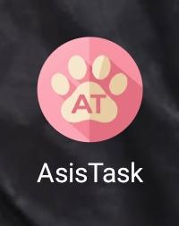
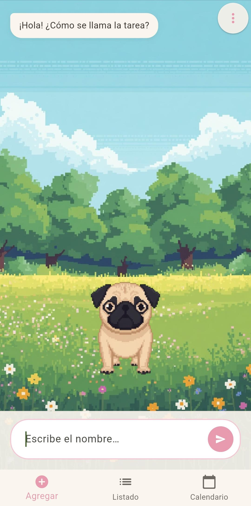
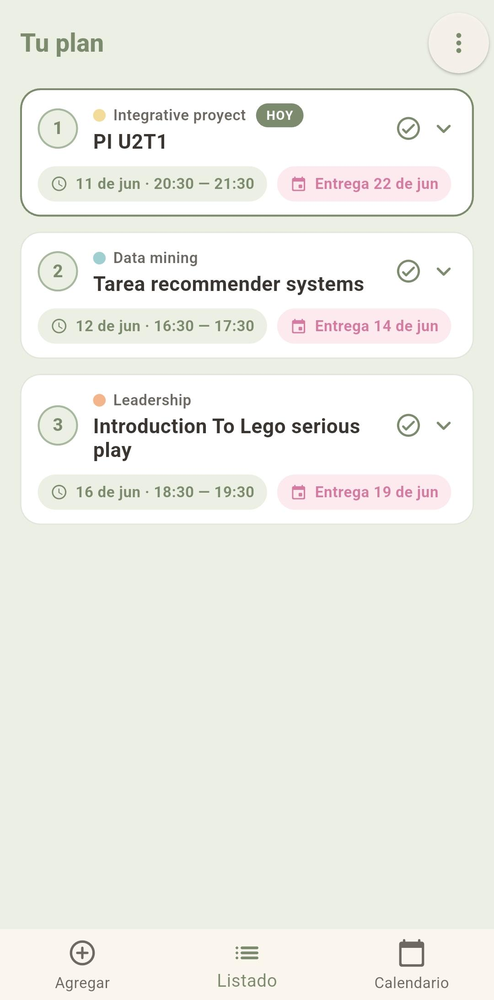
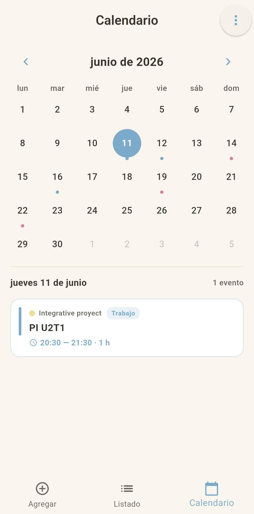

AsisTask analiza tus tareas y decide el orden óptimo para hacerlas, tomando en cuenta fechas de entrega, dificultad, tiempo disponible y más.

Cada pestaña tiene un propósito claro: agregar, planificar y visualizar tus tareas escolares.
Una mascota virtual (un pug en pixel art) te guía con preguntas conversacionales: nombre de la tarea, materia, fecha de entrega, dificultad, tiempo estimado y tu disponibilidad horaria por día.

Tus tareas aparecen ordenadas según el algoritmo de predicción. Puedes ver el bloque horario asignado a cada una, editar sus parámetros y el orden se recalcula en tiempo real. Las tareas completadas se archivan en el historial.

Días con sesiones de trabajo marcados en azul, días de entrega en fucsia. Al tocar cualquier día con eventos se despliega la lista de tareas correspondientes con sus horarios asignados.

El algoritmo de predicción evalúa cinco factores por cada tarea, los normaliza y los combina con pesos distintos para calcular un score de prioridad.
AsisTask nació como un proyecto personal con un objetivo claro: que los estudiantes no tengan que planificar manualmente el orden en que hacen sus tareas. La app decide por ellos, de forma inteligente y adaptable.
Desarrollada en Flutter con una arquitectura feature-first y lógica de dominio pura, el algoritmo de predicción es completamente independiente de la interfaz y está cubierto por tests automatizados.
Descarga el APK directamente o revisa el código fuente en GitHub. Compatible con Android 5.0 o superior.